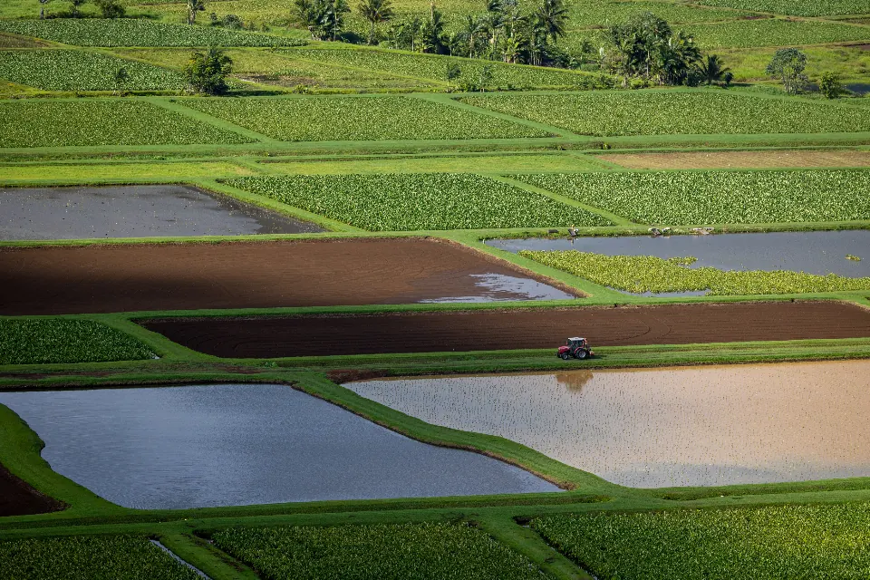

01
Levantamientos topográficos
Planimetría y altimetría de parcelas, solares y fincas con estación total y GNSS de doble frecuencia. Base fiable para proyectos de arquitectura, ingeniería y compraventa de terrenos.
Ingeniería Técnica en Topografía · Vélez-Málaga
Levantamientos, certificados catastrales, replanteos de obra y vuelos con dron para arquitectos, constructoras, notarías y particulares en toda la provincia de Málaga.

Mueve el cursor sobre esta sección para leer coordenadas en tiempo real, como un data-logger de campo.
0
Nº de colegiado COITT
±0 mm
Precisión con GNSS en tiempo real (RTK)
0%
De la provincia de Málaga, cubierta
0 h
Tiempo medio de respuesta a cada consulta
02 · Servicios
Planimetría y altimetría de parcelas, solares y fincas con estación total y GNSS de doble frecuencia. Base fiable para proyectos de arquitectura, ingeniería y compraventa de terrenos.
Informes de validación gráfica alternativa (IVGA), coordinación Catastro-Registro y deslindes de parcela. Documentación técnica lista para trámite administrativo.
Replanteo de ejes, cimentación y rasantes; control topográfico del movimiento de tierras durante la ejecución de obra civil y edificación.
Planos digitales, modelos digitales del terreno (MDT), perfiles longitudinales y transversales, y gestión de datos geoespaciales para proyectos técnicos.
Ortofotos, nubes de puntos densas y cubicación de volúmenes mediante fotogrametría aérea. Inspección de grandes superficies en una sola jornada de campo.
03 · Proceso
01
Nos cuentas qué necesitas: ubicación, tipo de parcela, plazos y para qué trámite es el trabajo.
02
Medición in situ con estación total, GNSS o dron, según la superficie y precisión requerida.
03
Cálculo de coordenadas, dibujo en CAD y control de calidad de cada dato antes de cerrar el plano.
04
Planos, informes y documentación técnica lista para tu proyecto, tu arquitecto o la administración.
04 · Cobertura
Desde Vélez-Málaga cubrimos la Costa del Sol oriental y Málaga capital. Los vuelos con dron permiten inspeccionar grandes superficies rurales o industriales en una sola visita, sin importar lo accidentado del terreno.
05 · Por qué nosotros
06 · Preguntas frecuentes
Depende de la superficie y el terreno, pero la mayoría de parcelas urbanas se miden en campo en una sola jornada. El plano final, con el gabinete ya procesado, suele entregarse entre 3 y 7 días laborables.
Sí. Cubrimos toda la provincia de Málaga: Axarquía, Costa del Sol y Málaga capital. Para trabajos más alejados, consulta disponibilidad y desplazamiento sin compromiso.
No es imprescindible, pero sí recomendable si hay dudas sobre linderos o accesos. Si no puedes acudir, coordinamos la visita con quien tenga las llaves o el acceso a la parcela.
Sí, en DWG/DXF para tu técnico y en PDF para trámite o consulta. También podemos entregar la nube de puntos completa cuando el trabajo se realiza con dron o escáner.
Sí. Elaboramos informes de validación gráfica alternativa (IVGA) y coordinamos la actualización catastral de tu parcela con la documentación técnica necesaria.
07 · Contacto
Respondemos en menos de 24 horas laborables. Si lo prefieres, llama o escribe directamente.